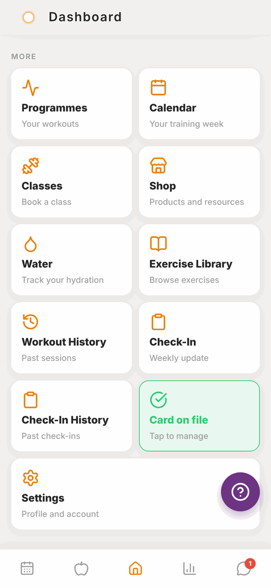
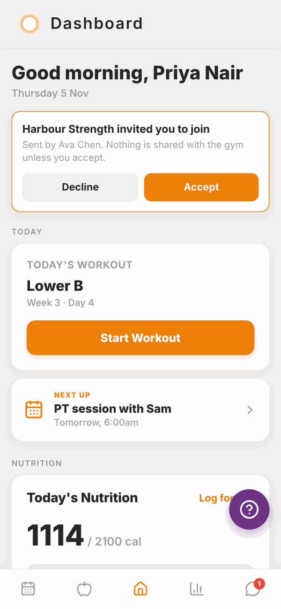

Totality for clients
Your Home screen
Everything on Home, from today's workout to the tiles that open every other part of Totality.
Home is the middle button at the bottom of the screen (the house). It shows what matters today, and has a tile for every other part of the app.
Pull down on Home to refresh it.

Today#
The TODAY section shows:
- Today's Workout. The name of today's session from your programme, with the week and day. Tap Start Workout to begin. If you've already done it today, you'll see Done today and a View summary button instead. On a rest day it says No workout today and Rest day. Recovery is part of the plan. If your trainer hasn't given you a programme yet, it says No programme assigned yet.
- Weekly check-in due. A red card shows on Sundays (from 10am) and Mondays when this week's check-in is waiting. Tap it to fill it in. See Check-ins.
- NEXT UP. Your next PT session or class booking and when it is, for example "PT session with Sam, Tomorrow, 6:00am". Tap it to open your Schedule or Classes.
- Coach Update. Shows when your trainer has reviewed your recent training and may change your programme soon.

Nutrition#
Today's Nutrition shows the calories you've eaten today against your target, and your protein, carbs and fat. Tap Log food to open your food log.
If you don't have targets yet, you'll see Set your nutrition targets instead. Tap it to set them, or wait for your trainer. See Nutrition targets.
Below that is a wearable card. Tap Connect a wearable to link Apple Health or Health Connect. Once connected it shows your steps, heart rate, sleep and workouts. See Wearables.
More: the tiles#
Scroll down to MORE. Each tile opens another part of the app.

| Tile | What it opens |
|---|---|
| Programmes | Every programme your trainer gave you, week by week. See Your programme and calendar. |
| Calendar | Your training week, day by day. |
| Classes | Book a gym class. Only shows if you belong to a gym. See Sessions, classes and credits. |
| Shop | Products from your gym, your trainer and Totality. See Shop. |
| Water | Track how much water you drink. See Saved meals and water. |
| Exercise Library | Every exercise with how-to notes. See Exercise library. |
| Workout History | Every workout you've logged, and your personal bests. See Workout history. |
| Check-In | This week's check-in. It turns red and says Due now when it's due. Only shows if you have a trainer. |
| Check-In History | Your past check-ins and your trainer's replies. |
| Payment Method or Card on file | Add or manage your card. Only shows if your gym or trainer takes payments in Totality. See Payments. |
| Settings | Your profile, units, notifications, password and account. See Settings. |
At the very bottom are links to the Terms & Conditions and Privacy Policy.
A gym invited you to join#
If a gym invites you while you already use Totality, a card appears at the top of Home saying [Gym name] invited you to join. Nothing is shared with that gym unless you accept.

- Tap Accept.
- Read the message. It tells you that the gym and its trainers will be able to see your profile and training history.
- Tap Join to join, or Not now to decide later.
Tap Decline if you don't want to join.
The help button#
The purple question mark button floats on most screens. Tap it to report a problem to the Totality team. See Troubleshooting.
Questions#
Why does Home say "No programme assigned yet"?
Your trainer hasn't given you a programme in Totality yet. Message them. Once they assign one, today's session shows here.
Today's workout is wrong. Can I change it?
You can move a workout to another day this week from the Calendar. See Your programme and calendar. To change what's in it, message your trainer.
Why don't I see the Classes tile?
Classes only show when you are a member of a gym in Totality. If you go to a gym that uses Totality and still don't see it, ask them to check your membership.
Why don't I see the Check-In tile?
Check-ins need a trainer. The tile shows once a trainer is linked to your account.
The numbers on Home look out of date.
Pull down on the screen to refresh. If they still look wrong, close the app fully and open it again.
How do I get rid of the help button?
You can't turn it off. It hides itself on message screens so it never covers the Send button.